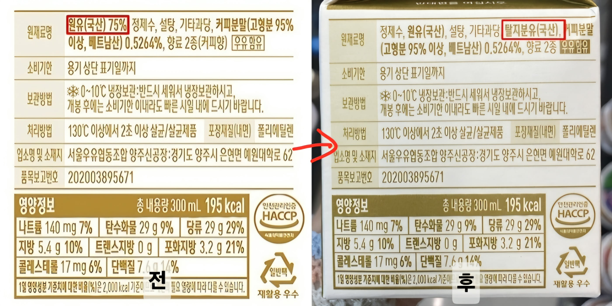

다른 우유들은 소가 찍 싼 원유를 그대로 넣어서 맛이 없는데 이 우유는 다름
무려 원유 비율을 줄이고 불순물이 없는 깨끗한 정제수와
원유를 한번 가공해서 만든 비싼 탈지분유를 넣어서 만들었기 때문에 너무 고소하다고 하네

다른 우유들은 소가 찍 싼 원유를 그대로 넣어서 맛이 없는데 이 우유는 다름
무려 원유 비율을 줄이고 불순물이 없는 깨끗한 정제수와
원유를 한번 가공해서 만든 비싼 탈지분유를 넣어서 만들었기 때문에 너무 고소하다고 하네
고소하다그죠
진짜 딸기 안들어가면 딸기니 뭐니 글씨니 그림을 못넣는 법이 있지않나? 그건 일본이였나?
우유도 뭔가 그런법이 없었나? 법에 구멍이 슝슝이네
원유 줄이고 정제수랑 탈지분유 넣었는데 왜 지방량은 그대로냐
성분은 바꿔놓고 영양정보는 예전에 신고한거 그대로 쓰네 ㅋㅋㅋ
맞네 ㅋㅋㅋㅋㅋㅋㅋㅋㅋㅋㅋㅋㅋ
우유가 남아 버리는데도 남는 우유로 만든 탈지분유가 더 많아 물에 탈지분유 타서 기존제품 대체 + 원가절감
와 진짜 고소하겠다~~
영양성분도 동일하네 ?
생각보다 저 차이를 못 느끼나
진짜로 고소하겠네
솔직히 원유비율 표시라도 해준 얼마 안되는 회사였음
이젠 걍 정떨어지고 좆같아서 아무거나 처마시련다
이야 서울우유네 매일 먹어야겠는걸?
서울우유 개고소함!!! 다들 손 떼!!
성분이 저렇게 바뀌었는데 영양정보가 똑같은 것도 뭔가 수상한데
우유맛 그 무언가네.. 원유함량 일정수준 미만이면 우유라는 명칭 자체를 못쓰게 해야함 ㅅㅂ
고소하면 어떻게...?
원유 함량 왜 표기 없어?
서울에서 제일 고소한 우유?
설탕보다 탈지분유가 적은건 ㅅㅂ ㅋㅋㄱ
고소하겠다~~
나 하나 쯤이야 라는 마인드로 고소한 우유보다는 소화가 잘될거같은 쪽으로 발주변경해서 하고있음
억까 좀 하지마라
한반도의 지하 깊은곳 맑고 깨끗한 정제수 많이 마시게 해서 수분부족과 요로결석 까지 예방하게 하려는 깊은 뜻을 아직도 모르겠느냐
작성자도 고소해졌다고 하네요~
응 회사에서 고소함